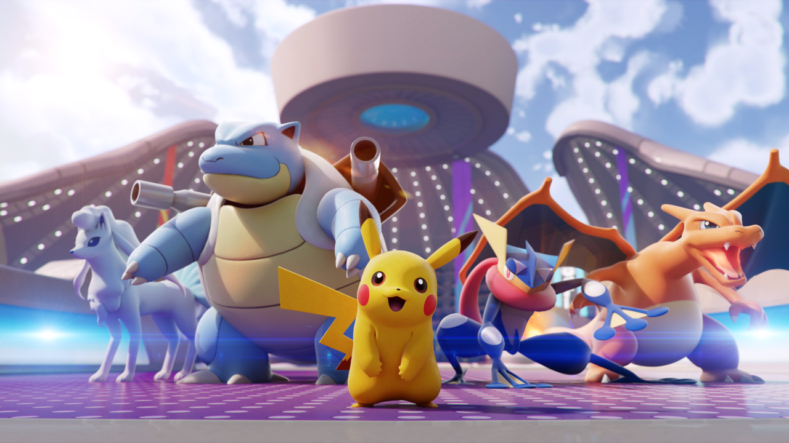

Pokémon UNITE
Pokémon UNITE es un videojuego gratuito del tipo multijugador de arena de batalla en línea (MOBA), desarrollado por TiMi Studios y publicado por The Pokémon Company para Android, iOS y Nintendo Switch.12 Se anunció en un Pokémon Presents el 24 de junio de 2020.
Jugabilidad
Pokémon UNITE es un videojuego multijugador de campo de batalla en línea con partidos que constan de dos equipos de cinco jugadores. El mapa del juego se divide en dos mitades, con varios puntos de control cada una. Los jugadores obtienen puntos para su equipo al derrotar a Pokémon «salvajes» de la IA (lo que se conoce como captura en el juego) y se mueven hacia uno de los puntos de control para marcar «goles». Cada partido tiene un límite de tiempo y el equipo con la mayor puntuación total al final de cada partido gana el juego. Los jugadores comienzan cada juego controlando Pokémon no evolucionados de bajo nivel, que pueden aumentar su nivel y obtener acceso a nuevos movimientos de combate a medida que ganan en batallas. La efectividad de tipo, una característica común en los juegos Pokémon, está ausente en Pokémon UNITE. Por otro lado, el juego incluye una mecánica de «movimiento Unite» única para cada personaje Pokémon.
Modalidades y categorías
El juego presenta tres categorías de juego:
- Normal: partida de 10 minutos y 5 Pokémon por equipo, donde solo está disponible el mapa Estadio Maremango
- Clasificatorio: idéntico al modo normal, solo que el jugador compite en la clasificación mundial, a lo largo de los siguientes rangos: Novato (Beginner), Alto (Great), Avanzado (Expert), Élite (Veteran), Experto (Ultra) y Maestro (Master)
- Rápido: partidas de 5 minutos en los mapas Estadio Mare, Ciudad Álgida o Parque Aural. Cada mapa está disponible durante un día
Donde el jugador puede jugar contra jugadores aleatorios, con amigos o jugadores invitados a la antesala mediante código, o contra la CPU (en línea y fuera de línea). En algunas circunstancias, el juego empareja al jugador solo con bots en partidas tanto normales como clasificatorias.